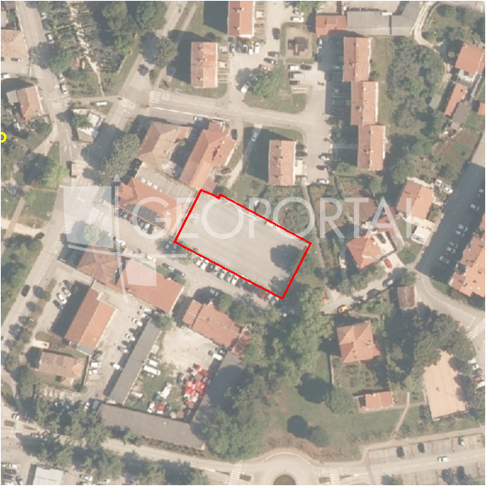

#43596 · Poreč, okolica, zemljište s panoramskim pogledom na more
Poreč, Poreč, Istarska · zemljiste · njuskalo · status active · oglas ↗
Ocjena
- Score
- 66 rule 66 · LLM – · 12.09.2026.
- RLV
- 292.000 € (229 €/m²) · ratio 2,35
- Ukupna investicija
- 2,65 M€
- GBP
- 1.022 m²
- Feedback
- –
- CRM
- –
Oglas
- Cijena
- 124.500 € (95 €/m²)
- Površina
- 1.311 m² · DKP 1.277 m² (odstupanje -2,6 %)
- Prodavatelj
- agencija · DIAMOND REAL ESTATE d.o.o.
- Prvi put
- 11.09.2026. · zadnje 11.09.2026. · 0 d na tržištu
Povijest cijene
| Datum | Cijena |
|---|---|
| 11.09.2026. | 124.500 € |
Flagovi
zone_uncertainty zona nije pregledana (reviewed: false) (−5)llm_pending LLM ekstrakcija/ocjena nedostupna
Komponente score-a
| rlv | {'gbp': 1021.7600000000001, 'kis': 0.8, 'nkp': 766.32, 'noi': None, 'rlv': 292034.556521739, 'ratio': 2.345659088528024, 'value': None, 'phases': 1, 'profile': 'obala_visestambeno', 'gdv_neto': 3371808.0, 'cost_soft': 102176.00000000001, 'gdv_bruto': 4214760.0, 'kis_known': False, 'total_inv': 2645499.6, 'cost_build': 2043520.0000000002, 'cost_other': 367833.60000000003, 'cost_sales': 126442.79999999999, 'demolition': False, 'gbp_source': 'kis', 'rlv_per_m2': 228.65217391304336, 'parcel_area': 1277.2, 'parcelation': False, 'roi_on_cost': 0.2267494578339757, 'profit_at_ask': 599865.5999999996, 'cost_demolition': 0.0, 'total_inv_phase': 2645499.6, 'parcel_area_effective': 1277.2, 'sale_price_per_m2_nkp': 5500.0} |
| hard | [] |
| info | ['llm_pending'] |
| rubric | {'permits': {'max': 5.0, 'detail': {'permit': 'none'}, 'points': 0.0}, 'location': {'max': 15.0, 'detail': {'source': 'rlv.yaml:istra_zapad/row2', 'sale_price_per_m2_nkp': 5500.0}, 'points': 11.5}, 'physical': {'max': 4.0, 'detail': {'slope_pct': 11.01, 'slope_points': 1.899}, 'points': 1.9}, 'liquidity': {'max': 3.0, 'detail': {'n_cuts': 0, 'points_cut': 0.0, 'points_days': 0.008333333333333333, 'seller_type': 'agencija', 'points_fresh': 0.5, 'price_cut_pct': None, 'days_on_market': 1, 'points_private': 0}, 'points': 0.51}, 'rlv_ratio': {'max': 25.0, 'detail': {'rlv': 292035, 'ratio': 2.346, 'asking_price': 124500.0}, 'points': 25.0}, 'ticket_fit': {'max': 10.0, 'detail': {'asking_price': 124500.0}, 'points': 3.66}, 'zone_quality': {'max': 8.0, 'detail': {'reason': 'zona nepoznata', 'source': 'nepoznato', 'zone_class': None}, 'points': 2.0}, 'profit_potential': {'max': 20.0, 'detail': {'roi_on_cost': 0.227, 'profit_at_ask': 599866}, 'points': 16.8}, 'price_vs_benchmark': {'max': 10.0, 'detail': {'source': 'auto:Poreč', 'deviation': 0.454, 'ask_eur_m2': 95, 'benchmark_eur_m2': 173.89}, 'points': 10.0}} |
| weights | {'llm': 0.4, 'rule': 0.6, 'model': 0.0} |
| penalties | {'zone_uncertainty': 5} |
| raw_score | 71,4 |
| rlv_notes | [] |
| flag_notes | {'max_gbp': 1022, 'total_inv': 2645500, 'zone_code': None, 'zone_class': None, 'zone_source': 'nepoznato', 'zone_reviewed': None} |
| caps_applied | [] |
GIS
- Čestica
- k.o. 323748, k.č. 3885 (pin_buffer, 0,79); k.o. 323748, k.č. 3875 (pin_buffer, 0,71); k.o. 323748, k.č. 3901/13 (pin_buffer, 0,68)
- Zona
- – (–)
- kig / kis / katnost
- – / – / –
- GP / UPU
- – · UPU –
- Pristup / nagib
- unknown · 11,0 % (max 21,7 %)
- More
- 102 m · red 2 · ZOP 1000
- Zaštite
- Natura ne · zaštićeno ne · kulturno dobro ne
- Zgrade na čestici
- 0 %
- Match
- 0,79
Karta
Ortofoto (DOF)

RLV kalkulacija — pretpostavke
| gbp | {'value': 1021.7600000000001, 'source': 'kis'} |
| kis | {'value': 0.8, 'source': 'default_profila'} |
| sea_row | {'value': '2', 'source': 'gis'} |
| soft_pct | {'value': 0.05, 'source': 'profil'} |
| nkp_ratio | {'value': 0.75, 'source': 'profil'} |
| cost_other | {'value': 367833.60000000003, 'source': 'profil: doprinosi+uređenje po m² GBP, financiranje+rezerva % gradnje'} |
| parcel_area | {'value': 1277.2, 'source': 'dkp'} |
| asking_price | {'value': 124500.0, 'source': 'oglas'} |
| margin_on_cost | {'value': 0.15, 'source': 'profil'} |
| build_cost_per_m2_gbp | {'value': 2000.0, 'source': 'profil'} |
| sale_price_per_m2_nkp | {'value': 5500.0, 'source': 'rlv.yaml:istra_zapad/row2'} |
| transfer_tax_and_acquisition | {'value': 0.06, 'source': 'profil'} |
Ekstrakcija iz oglasa
| utilities | ['struja', 'voda'] |
| access_road | yes |
| parcel_count | 2 |
Benchmarks mikrolokacije
| Vrsta | Vrijednost | n | Od | Izvor |
|---|---|---|---|---|
| land_ask_eur_m2 | 174 | 302 | 11.09.2026. | auto |
| newbuild_sale_eur_m2_nkp | 3.695 | 8 | 11.09.2026. | auto |
Opis oglasa
Istra, Poreč, okolica, građevinsko zemljište s panoramskim pogledom na more U okolici Poreča, na izuzetno atraktivnoj i mirnoj lokaciji, smješteno je ovo građevinsko zemljište koje se ističe otvorenim, panoramskim pogledom na more. Okruženo prirodom i zelenilom, a istovremeno u neposrednoj blizini grada, plaža i svih potrebnih sadržaja, ova lokacija nudi savršen spoj privatnosti, mediteranskog ambijenta i izvrsne prometne povezanosti. Uzvisina na kojoj se parcela nalazi osigurava trajno lijep pogled i dodatnu vrijednost nekretnine. Zemljište površine 1.311 m² nalazi se unutar građevinske zone te je pogodno za izgradnju obiteljske kuće ili luksuzne vile za odmor s bazenom. Parcela je pravilnog oblika, ima osiguran pristup, a dodatna prednost je mogućnost parcelacije na dvije građevinske čestice, što omogućuje izgradnju dva samostojeća objekta. Priključci struje i vode nalaze se neposredno do terena, čime se znatno olakšava i ubrzava proces izgradnje. Ova nekretnina predstavlja izvrsnu priliku za investitore, ali i za one koji žele realizirati vlastiti projekt s pogledom na more u blizini Poreča. Za više informacija i dogovor razgleda, slobodno nas kontaktirajte i iskoristite priliku za ulaganje na jednoj od najpoželjnijih lokacija zapadne Istre. ID KOD AGENCIJE: 1032-246